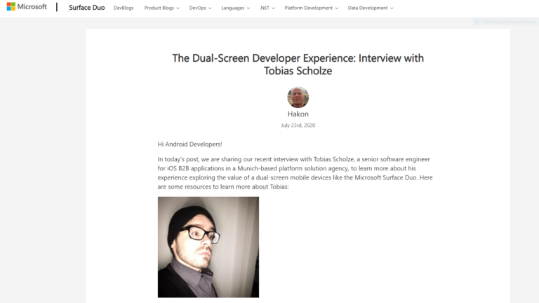

Für mich ist das Microsoft Surface Duo das erste Android Device auf was ich so etwas wie “Vorfreude” habe. Aus diesem Grunde schreibe ich seit einer kurzen Ewigkeit für Dr. Windows an einer Community App mit dem Namen #rTsd (GitHub, Play Store Beta). Dies steht für “Road To Surface Duo” und soll nicht nur mir Spaß bereiten sondern auch eventuelle Community-Mitglieder motivieren sich einmal in der Thematik der Softwareentwicklung zu versuchen.

Surface Duo BlogDa ich mich deswegen auch im offiziellen Surface Duo Developer Forum herumgetrieben habe – ja es sieht sehr verlasen aus – wurde ich schlussendlich gefragt ob ich Lust an einem schriftlichen Interview hätte.
Natürlich sagte ich ja und was soll ich sagen, nun ist es veröffentlicht. Es war wirklich spannend und ich hoffe wirkliche, dass es bald einen gut geplanten Marktstart auch hier in Deutschland für das Surface Duo geben wird.
Zurück